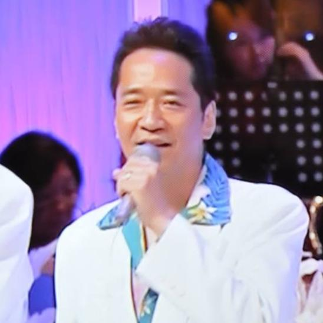

開発の背景：泥臭い現場を知る経営者として
私は長年、中小企業の経営者として荒波に揉まれてきました。そこで痛感したのは、素晴らしい技術やアイデアを持ち、必死に努力している人たちが、資本力や規模の論理に埋もれてしまう現実です。
「利益がすべて。少数の犠牲は厭わない」という風潮ではなく、世の中のため、人の為と、真摯にモノづくりに励む人々が正当に評価され、安心して暮らせる世の中にしたい。それが私の原動力です。
どれだけ検索エンジンや、AIが進化しても、素敵なアイデアや技術が人の目に止まるという仕組みにはなっていない。結局のところ自分で広報をするしかない。でも金がかかり過ぎるのが現状だと僕はかんじています。
水泳指導で見つけた「成長」への眼差し
18年間の水泳指導を通じ、人が壁を乗り越えて成長する姿を間近で見てきました。子育ての経験はありませんが、誰かの挑戦を支え、その可能性を信じる喜びは知っています。
3DVenueは、そんな「挑戦する誰か」の役に立つための道具になると信じています。
なぜ「MITライセンス」なのか
世の中が不安定さを増す今、衰えつつある高齢のエンジニアの自分に何ができるのかを考えていました。
独占ではなく共有: 良いアイデアが世界中で使われ、誰かの負担を減らすこと。
平和への願い: 次世代を担う若者たちが、争いではなく創造にエネルギーを使える環境。
大企業には難しい「個の繋がり」と「善意の循環」を生むために、このシステムをオープンソースとして開放しました。
最初の一歩
先日、あるスポーツ団体から「活用したい」との声をいただきました。試合がある時に、参加チームが出てくるそんな仕組みはつくれますか？と。
なるほどなぁ、見る人によって使い方が違って見えてくるんだなって思いました。
自分の作ったものが、誰かの「やりたいこと」と繋がった瞬間、この活動の意義を確信しました。
「お前に何ができる」と言われるかもしれません。それでも、何もしないよりはずっといい。
世界が少しでも平和で、温かい場所になることを願って、私はコードを書き続けます。
Greeting
ご挨拶
このページに行きついてくださった皆さん、こんにちは!!そしてありがとう。
紹介が送れましたが、日本の片隅で輝かしいサイトの裏で細々とコードを書き続けて来た日陰者の高齢者（６５歳）のWEBシステムエンジニアです。
サイトの制作に携わってからこの方Perl、ASP、java、AppleScript、VB、C++、PHP、etc...など様々な言語を独学で学びながら、WEBシステムを中心としたプログラムとニラメッコをしHTMLやCSS、Javascript、・・・すべて手書きで対応してきました。
約３０年前に書いたプログラムが、今でも某所では奇跡的にトラブルなく動いているのも、シンプルで軽量化にこだわり抜いたコーディングを心掛けて来たおかげかな？と自分の人生振り返ることがあり。今でもオール手書きにこだわっているところです。
私の現状と世の中の現状と
高齢になったこともあり、最近はさすがに手書きがしんどいこともありますが、そこはAIを上手く使って、忘れかけている公式などは、助けてもらいながら書き上げています。
今回3Dvenueを作ったきっかけは、会社員の頃からずっと感じていたことですが、素晴らしい技術やアイデアがあり世の中を良くしたいという思いを強い意思をもって、茨の道を歩く思いで会社を立ち上げても、誰の目にも触れず、いつのまにか挫折し、断腸の思いで、会社をたたまなくてはならない数多くの経営者を見て来ました。
世界にも、この日本だけを見ても中小企業が、世に知られるチャンスはそう多くはありません。
銀行の貸し渋り、検索エンジンも商業化に突き進み、検索の上位には広告が遠慮なく表示されるようになり、いまではAIがSEOの評価を引き継いでいるような状態です。
利益が優先される社会においては、致し方ないことだとは思っていますが、それでは何かの仕組みを使って、多くの人に知ってもらいビジネスチャンスを少しでも広げる方法はないか？と考えていました。
コロナで失ったもの、誕生したもの
数年前コロナの登場により、世界中がパンデミックに見舞われ、さらにはAIが追い打ちをかけるように広がりました。
しばらくの間仕事はなくなり、ホームページ制作の世界でもCMSのサービスが数多く誕生しました。
同時期、いずれAIがホームページを作ってくれる時代がきて、淘汰されていく業界のひとつになっていることを実感した私は、何か自分に出来ることはないか？と音楽を作り始めて見たり、様々な情報収集に勤めているある日、メタバースの存在をしり、クラスターに出会ったのです。
それまでは３Dは敷居が高くゲームの世界のことだと高を括っていましたが、一度その世界に入ってみると、バーチャル空間というのが実体験なんだなと確信を持ったのです。
最初はクラスターのコンテンツを作るために、UnityやBlenderの勉強をはじめ半年くらいでなんとかある程度使いこなせるようになったのです。
Unityを使えば、WebGLの技術でホームページの上でも３Ｄ空間が作れ、アニメーションなどが出来るということがわかったのですが、さらに衝撃だったのは、Unityを使わなくても、Three.jsというjavascriptを使えばWebGLが扱えるということに気がついてしまったんです。
それに気が付いたらエンジニア魂は黙っていません。。。ずるずると引き込まれていってしまったんです。
丁度そのころ、たまたまカップヌードルミュージアムの館長からお声がけをいただき、横浜の老舗ジャズ喫茶の旧店舗の復元が出来ないかということで、お話をいただけたので、写真だけが残ってる情報だけで、なんとか店舗をバーチャル空間に復元させることが出来ました。
コロナ禍に騒いだメタバースも一度は下火になる
先日も今年の６月だかあるメタバースの事業が終了するというニュースが流れたみたいですけどね？
憶測の域をでませんが、便乗して器を広げ過ぎたのではないかと思っているんです。地道にやっていたら、まだまだ広がったのではないかと。
つまり、これは人気が落ちたという訳でもなんでもなく、排他的な要素を作り独占市場を狙った歪みなんじゃないかな？って思ったりしています。
まだまだThree.jsを扱える技術者は小数だと思うんです。Three.jsに変わる新しい技術も出てくるかもしれませんしね。
私の場合は、面白いもので、３Dに関する仕事が少しずつ入ってくるようになりまして、展示会ブースシミュレータのようなものの開発にも携われた訳なんですね。
展示会ブースシミュレーターはリアルな空間を作っていくことが主な目的ですが、一般的には、まだまだ敷居が高いという現実もありますが、AIの進化によりより活発になって来る分野でもあるのかな？とも思います。
自分が経験した展示会の実体
会社員の頃の展示会出展の時の苦々しい経験を思い出して来ました。１００万以上もかけて出店したのに、３日間立ちっぱなし。。。ブースへの来客数は両手で数えられるくらいの現状だったんです。おそらく今の中小企業の経営者もそんな苦い経験をお持ちの方も少なからずいると思います。こういった仕組みというのは、往々にして、金持ち企業のためにあるというのが世の常でもあります。
その反面コミケのようなマーケットに大量に人が集まり個人のクリエイターのところに長者の列が出来るという一面もあるのも事実です。
そんなことを思うと、この展示会を開催できる仕組みを集客や広報に活かせるのではないか？と考えたのが、この3Dvenueなのです。
同じカテゴリの企業が集まり、共同でお金を出しあい、今のＷＥＢ広告という武器を共同で使えれば、１社では難しかった集客も、共同体として大きな集客の力になるのではないか？と言うのが、この展示会場のオープンソースの仕組みなんです。つまり１社では１万円の広告費も１００社集まれば１００万円分の集客ができてしまうということです。
これまでの経緯とこうなった背景について
最初は３Ｄ展示ブースの作成も接手にしてと考えておりましたが、それも、よく考えてみればブースなんて本当はいらないじゃないのかな？みんな詳しいホームページを持っているんだし、ホームページまでの誘導ができてしまえば、大勢の人に自社の技術を知ってもらえるようになる。そのためには、出来るだけシンプルな仕組みがいいのではいか？ということで、このMITのライセンス版が完成したのです。今時は、AIを上手に使って画像などの情報を用意して、プロンプトを上手く入力すればＡＩが素敵な３Ｄの空間を作ってくれてしまうくらのことは出来るようになってしまいました。
この出来上がった３Ｄ空間の展示会場をホームページに埋め込めばいいよね？そんな風に思い、展示会場とブース制作をセットにするのは止めたのです。セットにしてしまうと、誰もが参加できる仕組みではなくなってしまうからです。
３ＤVenueは、ほんとにシンプルな仕組みですし、軽量でなおかつ、商用無料でだれでも使える。少し知識のある人なら、ホームページを作るのと同じような感覚で自由に展示会場に個性を持たせ磨き上げていくことが出来るでしょう？なんなら、ＡＩにこの仕組みを作らせるでも良いと思うのです。ＡＩを使えば、せいぜい３日もあれば作れてしまうはずですから。
現在93歳の父から学んだこと、そして若きエンジニアのみなさんへ
私の父は93歳になります。その背中を見ていると、「生きる」とは常に新しい何かを自分の中に刻み続けることだと教えられます。
最近の若者からすれば、「老兵は去れ」と思うかもしれません。
確かに、私たちはいつか道を譲ります。しかし、ただ消えるのではなく、私たちが30年かけて積み上げた「手書きの知恵」や「挫折から学んだ義憤」を、誰でも使える武器として残していきたい。
結局どんなものでも、無駄がないシンプルなものが一番、飽きられないし、美しいのだと思っています。
毎日チャーハンを食べていたら、やっぱり白米が恋しくなるようにね。
3DVenueをオープンソースにしたのは、私からの「お節介」なバトンです。この仕組みを使い倒して、私には想像もできないような、もっと美しくて面白い世界を勝手に作ってほしい。
さあ、老兵が巻いたタネを使って、君たちは何を想像するのかな？私はとても楽しみです。